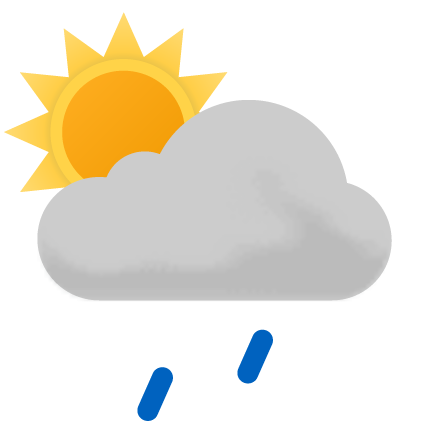

Andre liknende nettaviser
Her er et par eksempler på andre nettaviser, som selvfølgelig ikke er så god som denne, men de har ganske interressante nyheter.
Dette er et eksempel på en ingress. Ingresser er realtivt korte og fanger essensen i en artikkel i et par tre setninger. Du kan kopiere denne teksten og tilpasse størrelsen til ditt design

Her er et par eksempler på andre nettaviser, som selvfølgelig ikke er så god som denne, men de har ganske interressante nyheter.
Digitalisering og enklare handel over landegrensene gjer at det stadig kjem nye aktørar til, og det gir ein tøffare konkurranse. Det er viktigare enn nokon gong å vite kva som påverkar forbrukaråtferd. Så kva er eigentleg det?
| Dag | Formiddag | Ettermiddag | Kveld |
|---|---|---|---|
| Fredag |  |  |  |